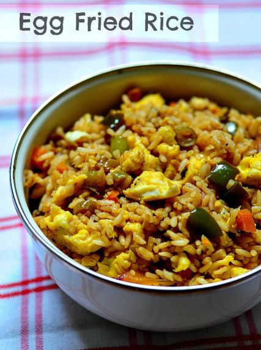
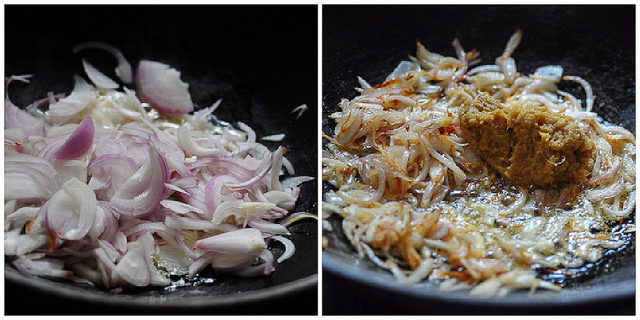
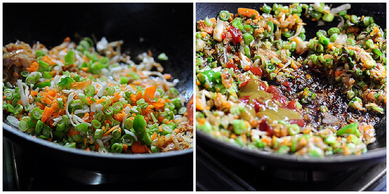
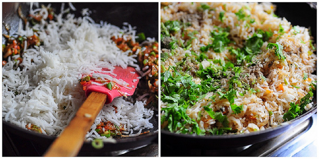
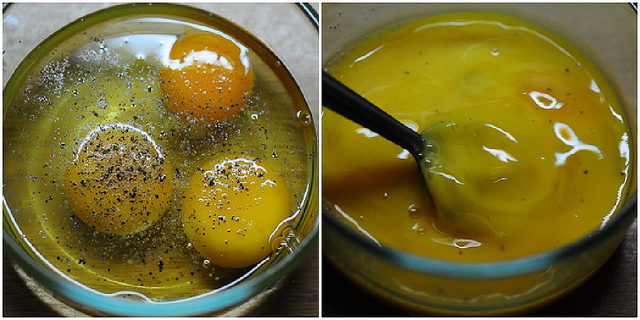
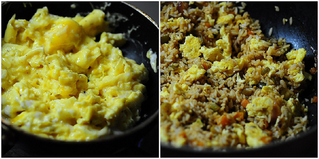

Egg fried rice

- 🍽️Servings: 4
- 🍝Total time: 35 min
- ⏱️Prep time: 20 min
- 🧑🏼🍳Cook time: 15 min
Ingredients
- 4 cups of cooked rice (here’s how to cook rice for fried rice)
- 1 cup of mixed vegetables, chopped fine (use carrots, French beans and capsicum), optional
- 1 small bunch of celery stalks, chopped fine (discard the leaves)
- 1 small bunch of spring onions, chopped fine
- 2 tsp of soya sauce
- 1 tsp of green chilli sauce (this is my favourite brand)
- 2 tsp of tomato sauce or ketchup
- 1 tbsp of freshly minced ginger + garlic
- 2 onions, sliced
- 1 tsp of freshly cracked black pepper
- 1-2 tbsp of oil
- 3 eggs
Directions
- Heat oil and add the onions. Let them fry on medium heat until light golden brown, don’t let them brown too much. Then, add the ginger + garlic and saute for another 2 mins.

- Add the finely chopped vegetables (if using) and celery and mix well. Cook for 2-3 mins until they wilt just a bit. Then add the soya sauce, tomato sauce, and green chilli sauce. Fry on high heat until the sauces bubble and reduce flame to medium-high, stirring constantly. Continue to stir-fry for another 2-3 mins. The vegetables should be cooked yet crunchy and not mushy or soft. If you are not using vegetables, you can skip to the next step after adding the sauces but I do recommend adding atleast some capsicum to your egg fried rice to add some extra punch.
- Add the cooked rice and stir well to combine. Remove from fire, check for salt and add more if required. Add the pepper powder and spring onions and set aside.

- In a bowl, beat the eggs + some salt + some pepper with a fork.

- Scramble in a small pan with about 1 tsp oil and gently fold into the prepared rice. Don’t break down the egg pieces too much while scrambling or over cook the eggs. Stop when they are a bit moist, they will cook a bit more with the heat from the pan and from the rice. Dried up bits of eggs are not fun, trust me!

- That’s it! Delicious Indo-Chinese Egg Fried Rice is ready.

Here are some great side dish recipe ideas for Egg Fried Rice you may like:
- Gobi Manchurian
- Chilli Soya Chunks
- Chilli Paneer
- Schezwan Vegetables
- Chilli Chicken